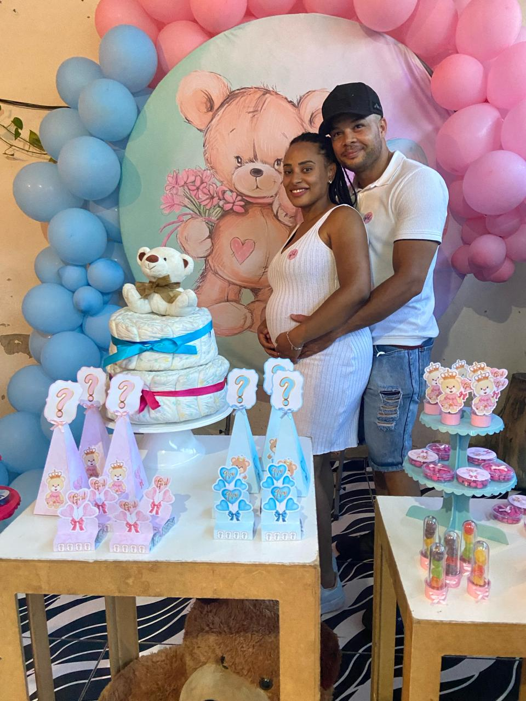

Página Inicial
Sobre Mim
Formação Acadêmica
Portfólio
Contato
Formação Acadêmica

“Atualmente, integro a equipe da Gocil, uma empresa líder no segmento de segurança privada. Paralelamente, estou ampliando meus horizontes acadêmicos através do curso de Análise e Desenvolvimento de Sistemas na Uninter. Meu compromisso é com a excelência em TI, visando não apenas reforçar a segurança de clientes e colaboradores, mas também impulsionar a inovação com soluções tecnológicas avançadas e eficazes. Tambem tenho conhecimento de ingles e espanhol intermediario.”